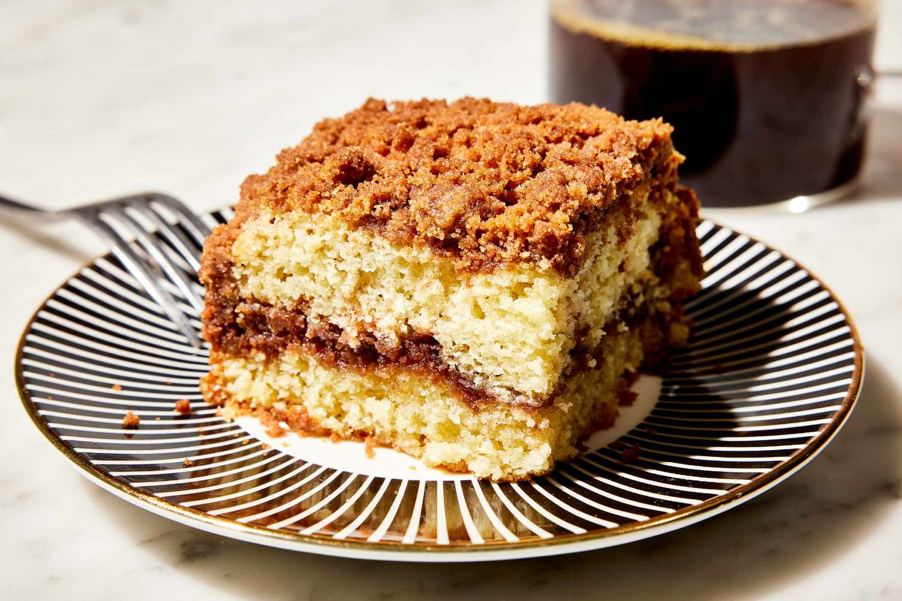

Aaron's Coffee Cake Recipe

This is my favorite dessert to make and eat. My older Brother discovered this recipe, and it has been a family favorite ever since.
The Recipe is fairly simple, nothing anything crazy. My little brother when he was 12 could make it, so anyone can! I will be giving you the ingredients and how to make it down below!
Ingredients
- Before we start, we can start preheating the oven to 350 degrees
- 2C Flour
- 2tsp Baking Powder
- 1tsp Salt
- 1C Sugar
- 2 Eggs
- 1C Water
- 3/4C Vegetable Oil
- 2(31/2oz) Pkg Instant Vanilla Pudding
Baking Time
Now that you have the ingredients, we are ready to BAKE THIS CAKE!!
- Mix all ingredients together
- Pour into a 9 by 13 pan
- Top with 1/2C Brown Sugar, 2tsp cinnamon, and 1C nuts(optional)
- Bake at 350 degrees for 25-30 minutes
- Take out and enjoy deliciousness!